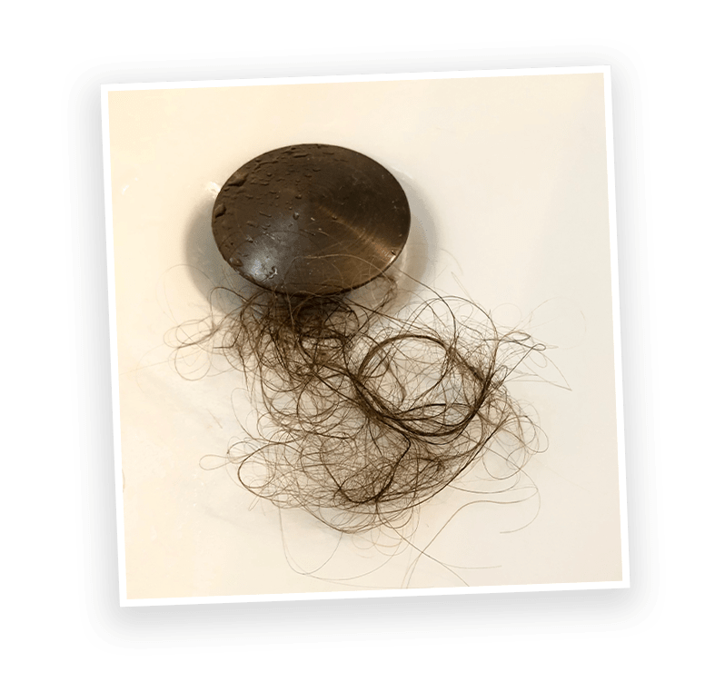

One Bite Of This Unique Cinnamon Roll Dessert Every Morning Can
STOP Women’s Hair Loss In Its Tracks…
And Help You Regain Your Youthful, Glowing, Beautiful Hair Effortlessly!
When Cristina stepped into the shower that day, she was hoping for a few
precious moments of peace and quiet...
The last thing she expected was to find herself on her knees crying, desperately grasping at the dead hair falling out of her head and slipping down
the drain - revealing an ever expanding bald spot on her scalp.
After all, Cristina had spent the last 4 months of her life on top of the world.
As a
brand new mom with a 4-month-old baby and a happy marriage, she was living
a version of the “perfect life” she had dreamed of for years.

Every time her new baby smiled, blissful joy shot through her like a spark from
Heaven.
But after weeks of all-nighters spent by the cradle singing lullabies,
Cristina desperately needed a few moments of peaceful silence.
She was EXHAUSTED.
As A Mom, Maybe You Can Relate?
For The First Few Weeks Of Motherhood
It Was Easy To Hide How Tired She Was.
But after months of round-the-clock new mom responsibilities, Cristina’s
reflection clearly showed her hair’s youthful glow had faded…
and recently she had started shedding an abnormally large amount of hair when
she brushed in the morning.
But Cristina chalked it up to simply “being tired”.
So when she retreated into the shower that day she was looking forward to a few
precious minutes of alone time where she could breathe, relax, and
recover before going back into full “mommy mode”.
But instead of a blissful retreat, Cristina’s shower turned into a nightmare…
Stroking her fingers through her hair under the warm water, Cristina felt panic
start to rise up in her chest as strands of hair tangled around her fingers.
Like pulling on the string of a sweater,
the more Cristina ran her hands through her hair, the more hair would come out
and wrap around her hands.
Suddenly noticing she was splashing around in an inch of standing water, Cristina
looked down in horror to find GOBS of her once beautiful hair clogging the
drain.
With the bald spot on her head growing, Cristina fell to her knees grasping at
her fallen hair, sobbing as it slipped through her fingers and disappeared down the
drain.
A Peaceful Morning Shower Turned Into Every Woman’s Nightmare!
If you’re a woman who’s dealing with hair loss,, you
can probably relate to the feeling of shock the day you realize that you are
losing more hair than you’re growing back.
Maybe you’ve just given birth…
Maybe you’re going through menopause…
Or maybe you’re just dealing with an overload of stress
Regardless of the reason WHY your hair is falling out, you undoubtedly remember
the panic that steals your breath away when one morning your brush pulls out a
particularly large clump of hair…
You might know the feeling of self-pity that comes from looking in the
mirror
combing your hair every which way to cover your bald spot…
And you definitely know how quickly your confidence can crumble when your hair
starts falling out…
This is exactly what happened to Cristina.
Before that fateful day in the shower when she finally noticed she was losing A LOT of
her hair, Cristina’s life was filled with compliments.
She had always been told how beautiful her hair was.
Other women asked what her secret was to make her hair so shiny and grow so
effortlessly.
And every night her husband would run his hands through her hair before they went to
bed.
Cristina’s Hair Made Her Feel, Well…
Like A Woman.
So that’s why it was so devastating to begin suddenly losing hair in her
early-30s.
This is a picture of Cristina on her farm in Maryland a few weeks after her hair
suddenly started falling out.
While it looks innocent on the surface, what this picture hides is a
nightmarish story that affects over 50% of women at some point in their lives.
[ 1 ]
You see, under the hat in the picture above,
Cristina is hiding THIS…
And while losing your hair is a nightmare that no woman ever wants to go through…
What’s WORSE Than Losing Your Hair Is Feeling Like Your
Life Has Been Stolen From You.
With her confidence gone, Cristina started skipping social events to stay home
and hide her bald spot.
When she had to go to the grocery store, Cristina wore a hat and got in and out as
fast as she could.
And maybe worst of all, Cristina’s intimacy with her husband disappeared and
their relationship crumbled.
Cristina’s life had changed overnight thanks to her growing bald spot…
But the saddest part about Cristina’s story is that she is NOT ALONE.
Millions Of Women Suffer From
Premature
Hair Loss…
But Only A Few Learn The Simple Natural Secrets To
Recover And Grow Their Hair Back